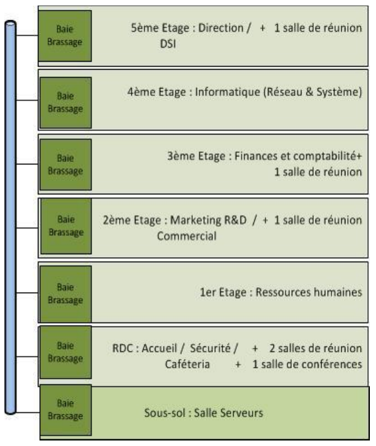
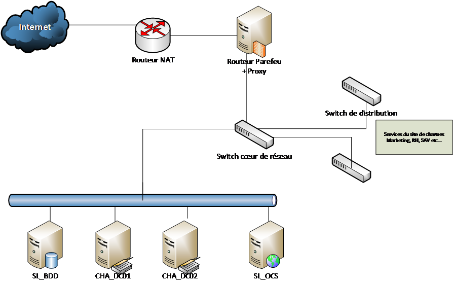

Infrastructure actuelle
Extrait de l’infrastructure par site
Site de chartres (siège social)
| Nombre d’utilisateurs | 132 |
|---|---|
| Nombres de stations de travail | 132 |
| fixes | 100 |
| portables | 12 |
| Nombre de serveurs | 10 |
Site d’Orléans
| Nombre d’utilisateurs | 60 |
|---|---|
| Nombres de stations de travail | 83 |
| fixes | 80 |
| portables | 3 |
| Nombre de serveurs | 11 |
Site de Tours
| Nombre d’utilisateurs | 179 |
|---|---|
| Nombres de stations de travail | 95 |
| fixes | 90 |
| portables | 5 |
| Nombre de serveurs | 10 |
Site de chateauroux
| Nombre d’utilisateurs | 81 |
|---|---|
| Nombres de stations de travail | 50 |
| fixes | 40 |
| portables | 10 |
| Nombre de serveurs | 3 |
Détails des équipements serveurs par site
Site de Chartres
| Nom | Fonction | OS |
|---|---|---|
| CHA_DC_01 | Contrôleur principal de domaine | Windows server 2012 |
| Serveur primaire DNS | Domaine : chartres.local | |
| Serveur DHCP | ||
| Serveur de fichiers | ||
| CHA_DC_02 | Contrôleur secondaire de domaine | Windows server 2012 R2 |
| Serveur secondaire DNS | ||
| Serveur de fichiers repliqué | ||
| SL_BDD | Serveur de base de données | Linux Debian 8 + MySQL |
| SL_OCS | Serveur d’inventaire | Linux Debian 8 + OCS Inventory |
| … |
Site d’Orléans
| Nom | Fonction | OS |
|---|---|---|
| ORL_DC_01 | Contrôleur principal de domaine | Windows server 2008 R2 |
| Serveur primaire DNS | Domaine : orleans.local | |
| Serveur DHCP | ||
| Serveur de fichiers | ||
| ORL_DC_02 | Contrôleur secondaire de domaine | Windows server 2008 R2 |
| Serveur secondaire DNS | ||
| Serveur de fichiers repliqué | ||
| … | … | … |
Site de Tours
| Nom | Fonction | OS |
|---|---|---|
| TRS_DC_01 | Contrôleur principal de domaine | Windows server 2008 R2 |
| Serveur primaire DNS | Domaine : tours.local | |
| Serveur DHCP | ||
| Serveur de fichiers | ||
| TRS_DC_02 | Contrôleur secondaire de domaine | Windows server 2008 R2 |
| Serveur secondaire DNS | ||
| Serveur de fichiers repliqué | ||
| … | … | … |
Site de Chateauroux
| Nom | Fonction | OS |
|---|---|---|
| CHX_DC_01 | Contrôleur principal de domaine | Windows server 2008 R2 |
| Serveur primaire DNS | Domaine : chateauroux.local | |
| Serveur DHCP | ||
| Serveur de fichiers | ||
| CHX_DC_02 | Contrôleur secondaire de domaine | Windows server 2008 R2 |
| Serveur secondaire DNS | ||
| Serveur de fichiers repliqué | ||
| … | … | … |
Topologie physique sur le site de chartres

Topologie Logique actuelle

Dysfonctionnement du SI
La DSI de l’entreprise a demandé en 2022 à une société extérieure d’auditer son système d’information. Le rapport d’audit, daté de mars 2023, a permis de mettre en lumière les dysfonctionnements suivants:
1-Des processus et des choix hétérogènes
Aujourd’hui, chaque site possède sa propre méthode de travail, ses choix de systèmes d’exploitation et de logiciels. A titre d’exemple, chaque site possède aujourd’hui son propre antivirus. Il reste donc très difficile, voire souvent impossible, de mettre en place des solutions globales au niveau de l’organisation.
2-Des couts de gestion important
L’organisation regroupe, sur l’ensemble de ses quatre sites, une très grande diversité de serveurs et de stations de travail :
La gamme des stations de travail est à l’égale de la gamme des serveurs puisque l’on y retrouve des clients installés au fil des livraisons matérielles.
Les techniciens du centre d’appels de la DSI (site de Chartres) sont ainsi obligés de connaître plusieurs systèmes d’exploitation clients tels que Windows 2008 R2, Windows 7, Windows 10 sans oublier les différentes versions serveurs de Windows ainsi que les différentes distributions Linux utilisées (Debian, CentOS pour ne citer qu’elles) et les diverses applications, souvent dupliquées quand elles ne sont pas triplées.
Cette situation induit une charge de travail et des coûts importants pour le centre d’appels.
3-Une réactivité lente
Vu la diversité des versions des systèmes d’exploitation des stations de travail et des serveurs, la qualification des logiciels se voit multipliée par trois.
Ainsi, par exemple, la suite bureautique LibreOffice est présente sous différentes versions sur les différents sites. Il faut donc tester le bon fonctionnement de chaque version LibreOffice aussi bien sous Windows ce qui ne se passe pas toujours bien.
En outre, lorsqu’un problème est détecté sur une plateforme ou qu’un nouveau Service Pack sort afin d’améliorer la sécurité ou apporter des fonctionnalités supplémentaires, il faut le temps de le tester et de le déployer sans impact sur les autres plateformes.
L’entreprise souffre donc de problèmes de réactivité au niveau de la gestion de son parc.
Une gestion du parc informatique trop complexe
L’entreprise ne possède pas de méthode d’installation industrialisée pour les systèmes d’exploitation clients et serveurs.
La mise en service de stations de travail ou de serveurs se fait donc manuellement. Cela nécessite la mobilisation de techniciens spécialisés et formés à ces procédures complexes (Boot sur clé USB et réponse aux questions manuelle, ceci répété sur autant de postes que compte le parc)
L’impact sur le délai de la mise en production et le coût des machines est évidemment très conséquent.
Un SI peu sécurisé
Le système d’informatique tel que défini actuellement est très peu sécurisé.
Les principales défaillances repérées au niveau de la sécurité tiennent aux faits suivants :
-
présence d’anciennes versions de systèmes d’exploitation, qui imposent par exemple de maintenir des protocoles de communication non sécurisés, octroi par défaut, à tous les utilisateurs, du statut d’administrateurs de leur station de travail, ce qui ouvre la voie, entre autre, à :
-
l’installation d’applications non conformes,
-
l’utilisation de périphériques externes (sans compter l’impact sur la gestion par le centre d’appels).
-
-
absence de système centralisé de mise à jour de correctifs.